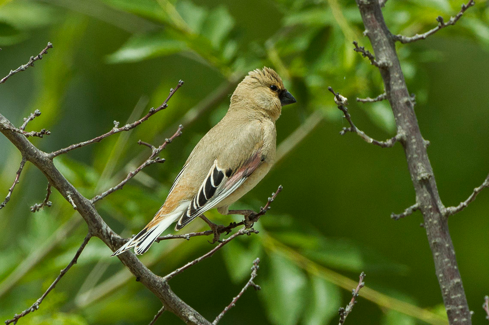

Rhodospiza obsoleta
The Desert Finch as an average wingspan of 26 centimetres (10 in). It has a strong black beak, black and white remiges and retrices, and a line of rosy pink on each wing. The female is duller than the male in colour, but other than that the adult sexes are similar in colour pattern.